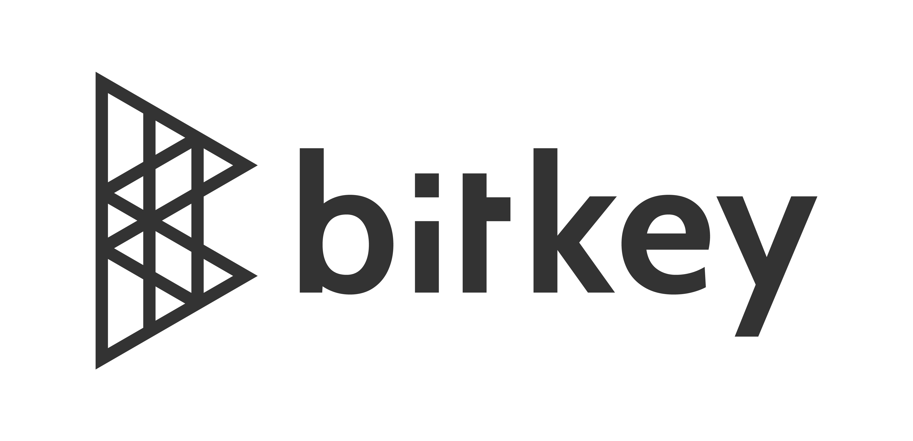

プロダクトも人も
成長する組織へ
Service
プロダクトコーチング
SaaSなどのプロダクトづくりのさまざまな課題に、経験豊かなコーチがアドバイザリーセッション、コーチングセッションを通して解決に導きます
- プロダクトのPMF・グロースのための洞察が欲しい
- CPO/CTO/PMが本質的な仕事に集中できるようにしたい
- プロダクトチームをより自律的なチームにしたい
- PMが増えたため、PM組織や成長環境を整えたい
- 「プロダクト主導企業」「テクノロジー企業」へと変化したい
- 成長の壁にぶつかっているPMを支援したい
- PMの採用を開始・拡大したい
CPOやCTO、VPレベルPMやシニアPMをカウンターパートとして、週1回のセッションをベースに課題解決のためのディスカッションを行います。
Product Coach
実績のあるコーチが、プロダクトコーチングを提供します

代表取締役 プロダクトコーチ
横道 稔
複数のソフトウェア企業にて、プロダクトマネージャー、エンジニアリングマネージャー、アジャイルコーチ、人事など、プロダクトづくりに関わる様々なマネジメント、リーダーシップロールを経験。元 LINE株式会社 プロダクト組織戦略担当フェロー。元プロダクトマネージャーカンファレンス実行委員会 代表理事。プロダクト作りに関連する書籍の翻訳者（『LOVED』『プロダクト・レッド・オーガニゼーション』）。
詳細プロフィール
Client
ご支援実績 企業さま（一部）


- 
News
-
協賛
5/18開催の「RESEARCH Conference 2024」に、シルバースポンサーとして協賛します
-
登壇
代表の横道が、5/15開催の「プロダクトマネージャー座談会 ＠ Money Forward」に登壇します
-
出演
代表の横道が、「プロダクトマネージャーのキャリアラジオ」に出演し、プロダクトコーチングについて話しました
-
登壇
代表の横道が、6/21開催の「Scrum Fest Osaka 2024」にキーノートで登壇します
-
お知らせ
-
資料
代表の横道が、Product Zine Day 2024 Winterの登壇資料「影響力のあるプロダクトリーダーシップとは」を公開しました
-
協賛
2/6開催の「Women in Agile 2024」に協賛し、ブースを出展します
-
登壇
代表の横道が、1/30開催の「Product Zine Day 2024 Winter 」に特別講演で登壇します
-
登壇
代表の横道が、12/05開催の「PMとPMMの良い連携について話そう〜急成長プロダクト Bill Oneとログラスの事例〜 」にモデレーターとして登壇します
Company
| 会社名 | Product People株式会社 （読み：プロダクトピープル） |
|---|---|
| 所在地 | 東京都渋谷区道玄坂1丁目10番8号 渋谷道玄坂東急ビル2F-C |
| 設立 | 2023年8月 |
| 代表取締役 | 横道 稔 |
Contact
サービス内容詳細や料金は、以下からお問い合わせください。
問い合わせフォーム